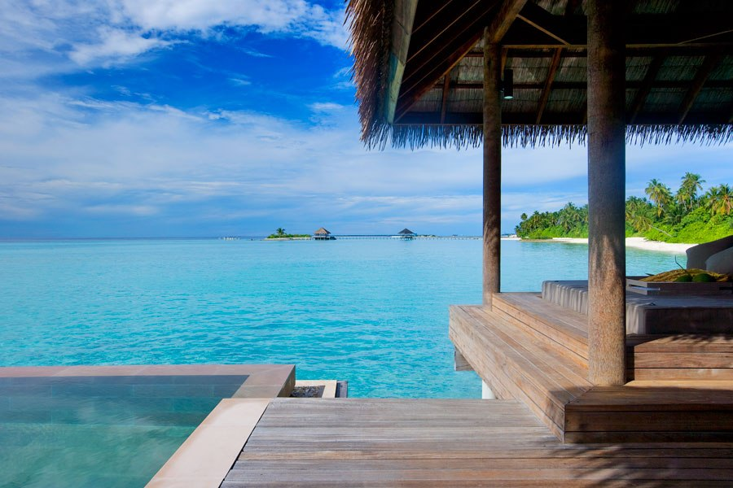

Travelling can be one of the most exciting experiences of our lives as it gives us the opportunity to explore other countries, cultures, and mindsets. At one point, travelling abroad was reserved for those that can pay for ultra-steep ticket price. However, these days cheap flights and online booking allows even the most basic of users the ability to have an experience abroad.
In this guide, I'll walk you through the basics of choosing where to go, choosing where to stay, and then choosing what to do when you get there.
Choosing Where To Go
Maybe its your first trip abroad or your 100th, but choosing where to go is an important part of the process.

In my mind, several factors can contribute to the decision of deciding where to plan your trip.
Length of Travel
Maybe you’re booking a trip for spring break or an entire summer abroad. The length you have to travel can affect both how long you’re willing to fly to get there, how many places you can go, and your budget.
Trip Goal
I could probably list dozens of reasons to travel abroad, but in general I’ll categorize trips as having one of the following priorities:
- Sports and adventure activities
- Cultural and nightlife activities
- Rest and relaxation
One could go to the same place but have a vastly different experience just depending on what kind of trip they’re looking for.
Budget
The total amount of your budget can affect how far you're willing to travel since longer flights are by nature more costly. However, even with countries that are comparably far apart the cost of living in each country can make your trip more or less expensive.
Actually picking the place...
Unless you know you’re dead set on a hiking trip in the Peruvian Andes, I typically start with where has cheap flights. Tools like google flights let you explore places from your city during a date range.
Once you have it narrowed down to potentially 5 cities that have flights in your price range, start doing some basic research on activities there.
Sports & Adventure
Are there national parks nearby or outdoor activities? A quick google search can reveal the answer.
Culture & Nightlife
What are the top museums in the city? Are there lots of restaurants and bars?
Rest & Relaxation
Is the city near a beach or mountain? Is it densely populated or more slow paced?
Choosing Where To Stay
The next part to booking any trip in my mind is picking your accommodation while there.

Choosing an option depends on your trip priorities and personality. However, I have some pros and cons for the different types of places you can stay. Typically, accommodations fall into 3 categories
Hostel / Shared Space
Pro: Great if you’re travelling alone and want to meet other travelers. Hostels are pretty rare in the united states so a very fun experience if abroad. Hostelworld is a great place to find cool and cheap hostels.
Con: Often just renting a bed, so less privacy and personal space (perhaps a pro for some people)
Airbnb / Rental
Pro: You can get a whole furnished apartment or sometimes just a room as well. Lots of different options. See Airbnb's website
Con: Some Airbnb hosts can be super helpful in helping you find things to do in the city, others are more hands off.
Hotel
Pro: Definitely the nicest in terms of room quality and privacy
Con: Likely the most expensive option and harder to meet new people while there
{kind=link}
{kind=link}
{kind=link}
{kind=link}
If you have an idea of what kind of accommodation you want, the neighborhood where you stay is just as important. I find several sources good places to look (outside of just a quick google search for the best neighborhoods in your selected city).
Choosing What To Do
You've made it all this way, now what will you do once you're actually there?

At this point for some the planning is over. If you know where you’re going and where you’re staying the rest will fall into place. For others, they need a more concrete plan of what they’re doing each day. Personally, I like the have an itinerary of where I’ll be each day and where I’m staying that night and then play the rest by ear. Perhaps I know of a few museums or neighborhoods I’d like to check out, but the rest can be left to chance.
A few tips for those that like plans:
# 1
Try to minimize travel time: especially in foreign countries it can be difficult or stressful to navigate public transit systems so you don’t want to spend all day criss crossing the city. Its typically easiest to pick a neighborhood or sector and then try to do lots of activities around there then pick another the next day.
# 2
If you want to do an excursion that’s farther away like perhaps a visit to a nearby town or a fishing expedition it might be useful to book this in advance as it takes more planning.
Last but not least, enjoy your trip!